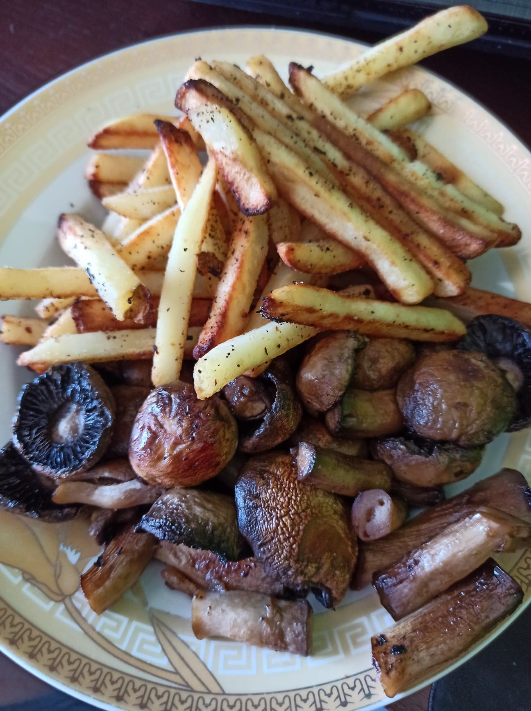

Fries with mushrooms

Ingredients
- 500g mushrooms
- 20g olive oil
- 300g fries
- salt
- spices like pepper, marjoram, oregano, sweet pepper
Steps
- Preheat oven to 220°C
- in the meantime peel mushrooms
- Lay parchment paper on baking tray and fold this paper in midpoint to not let mushroom water get to fries
- place fries and mushrooms on different halfs
- pour over mushrooms with olive oil
- salt fries and mushrooms
- season fries with spices at your discretion
- put tray to oven
- Bake in the preheated oven until fries will be goldren brown, about 18 minutes
- serve hot